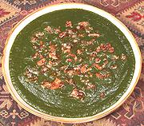

|
Sarson Ka SaagIndia - Punjab - Sarson Ka Saag | ||||
| Serves: Effort: Sched: DoAhead: |
6 side *** 2 hrs Most |
This famous purée of greens is very popular in the Punjab region of India (Northwest). It is made with countless variations of ingredients and methods - but the mustard greens are invariable. | |||
| The "tempering" (tarka, tadka or whatever) varies greatly, and sometimes the greens are spiced a bit more and simply garnished with butter or crumbled paneer cheese. In all cases you want to end up with a purée that's thick but still pourable. Serve with corn bread, chapatis, roti, or similar. | |||||
|
12 12 3 2 3 1 2 2 ------ 1/4 1 2 |
oz oz oz oz t T c --- c in cl |
Mustard Greens "Spinach" (1) Methi Greens (2) Green Chili (3) Onion Salt Cornstarch Water -- Tempering Butter or Ghee Ginger Root Garlic |
Note: all weights for the greens are bunches as purchased with stems. Make: - (2 hrs - 55 min work)
|
isv_sarson1 100110 var - www.clovegarden.com
©Andrew Grygus - agryg@aaxnet.com - Linking to and
non-commercial use of this page is permitted.